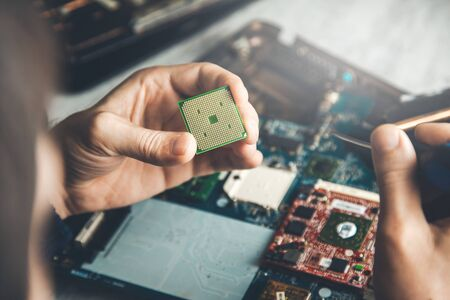
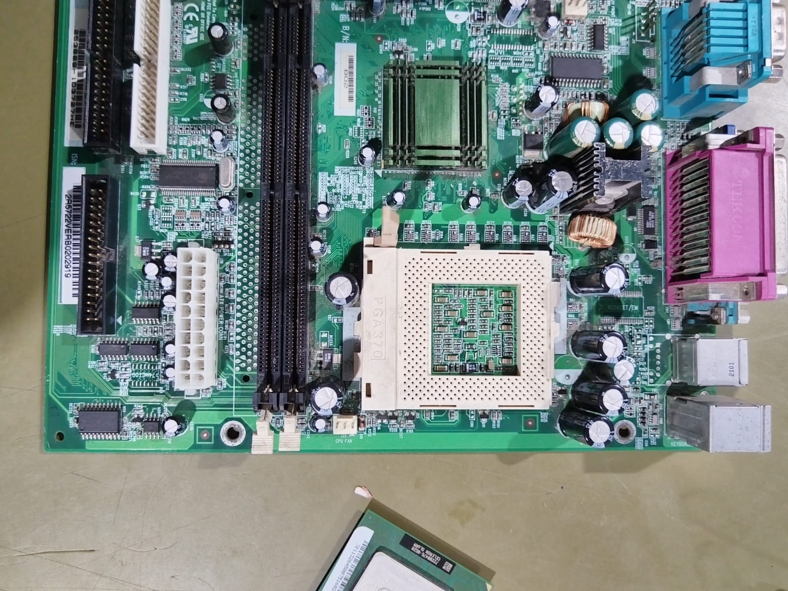
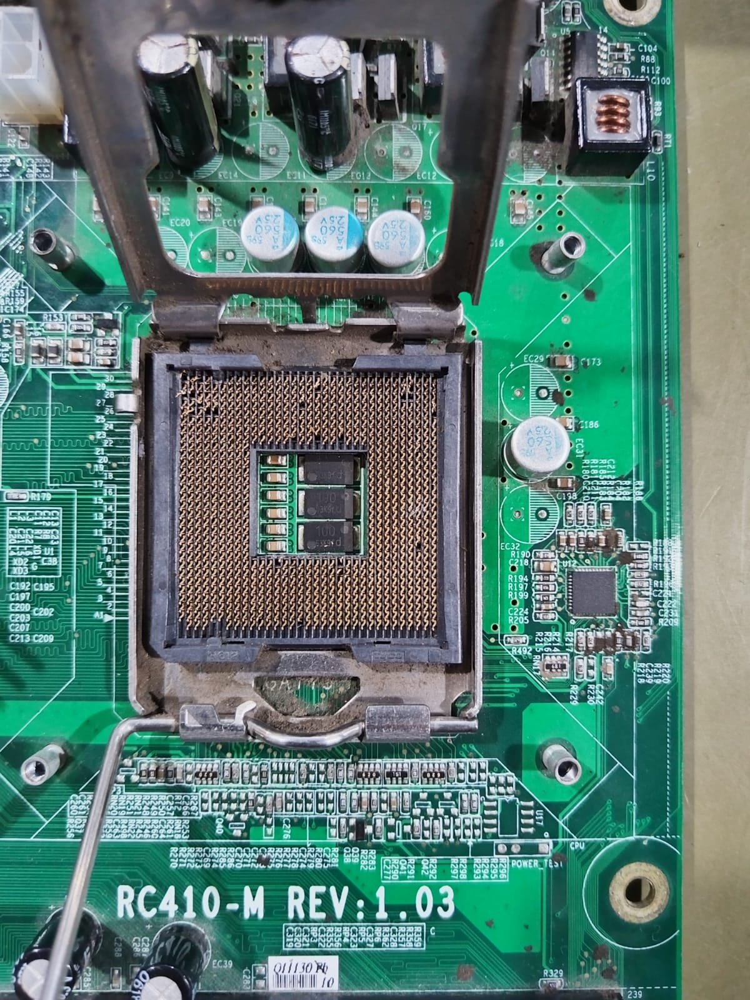

3.1 Chip set
Un chipset es el conjunto de circuitos integrados diseñados con base en la arquitectura de un procesador...
3.1.1 Unidad de procesamiento
La unidad central de procesamiento (CPU) es el hardware dentro de una computadora u otros dispositivos programables...
3.1.2 Controlador del Bus
El controlador del bus se encarga de la frecuencia de funcionamiento y las señales de sincronismo, temporización y control...

3.1.3 Puertas de Entrada/Salida
Un puerto de E/S es un enchufe en una computadora al que se conecta un cable...
3.1.4 Controlador de interrupciones
El controlador de interrupciones es un módulo que tiene por función gestionar las interrupciones de entrada/salida...
3.1.5 Controlador de acceso directo a memoria
El mecanismo de acceso directo a memoria está controlado por un chip específico, el DMAC...
3.1.6 Circuitos de temporización
El circuito temporizador o de retardo es un elemento que se activa o desactiva después de un tiempo preestablecido...
3.1.7 Circuitos de control
Es una red secuencial que acepta un código que define la operación que se va a ejecutar...
3.1.8 Controladores de video
La tarjeta de video es un componente requerido para generar una señal de video que se manda a una pantalla...
3.2 Aplicaciones
En informática, un periférico de entrada/salida (E/S) es un tipo de dispositivo capaz de interactuar bidireccionalmente con el sistema...
Conforme la tecnología avanza, más datos se generan, por lo que es necesario contar con un almacenamiento eficiente...